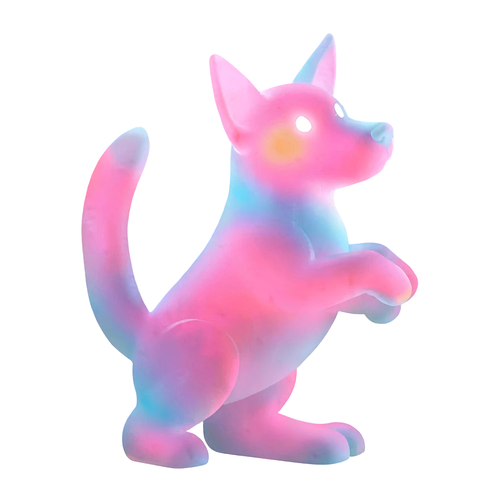

The Trust Problem
Every Act of Care.
Verifiable.

Veterinary clinics rely on fragmented records and manual identification. Without a verifiable animal identity, medical histories become difficult to trust, duplicate records emerge, and continuity of care is compromised.
- Photos reused across multiple cases
- Duplicate registrations go undetected
- Similar animals substituted for registered ones
- Fake clinic confirmations
- Documents altered after verification
- Scattered records across organizations
Who is affected
SheltersVeterinariansVolunteersMunicipalitiesDonorsNGOs
A centralized database requires trust in a single owner. LibrePatas creates a shared verifiable layer between all participants.
What Ethereum proves
Ethereum does not identify the animal. It proves who confirmed a claim, what evidence commitment was referenced, and whether the published history changed.
What LibrePatas provides
LibrePatas does not use blockchain to prove physical truth. It provides verifiable accountability by showing who issued a claim, whether they were authorized to do so, what evidence and policies supported it, how it was corrected or revoked over time, and whether the off-chain records remain consistent with the immutable commitments stored on-chain.